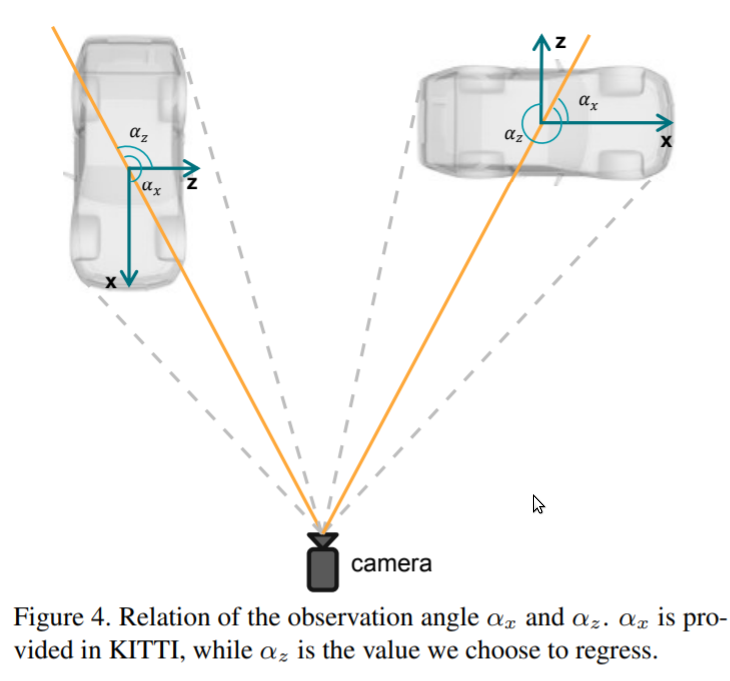

radar camera fusion
我们的方法称为CenterFusion，它首先使用中心点检测网络通过在图像上识别对象的中心点来检测对象。
然后它使用一种新颖的基于视锥的方法来解决关键数据关联问题，从而将雷达检测结果与相对应对象的中心点相关联。
相关的radar检测用于生成基于radar的特征图以补充图像特征，并回归到诸如深度，旋转和速度之类的对象属性。
radar使用多普勒效应快速准确的确定物体的速度。
视锥体关联机制
使用对象的2d边框极其估计的深度和大小，为该对象创建3d兴趣区域，视锥体。
在roi内离图像中心点最近的点，关联。
其中是尺寸自适应标准偏差。
For autonomous robots to navigate a complex environment , it is crucial 至关重要的 to understand the surrounding scene both geometrically and semantically.Modern autonomous robots employ multiple sets of sensors, including lidars, radars, and cameras. Managing the different reference frames and characteristics of the sensors, and merging their observations into a single representation complicates perception.
Our approach consists of an ensemble of neural networks which take in sensor data from different modalities 形式 and transform them into a single common top-down semantic grid representation.We find representation favourable as it is agnostic无关 to sensor-specific reference frames and captures both the semantic and geometric information for the surrounding scene.
Because the modalities share a single output representation,they can be easily aggregated 汇总to produce a fused output.In this work we predict short-term semantic grids but the framework can be extended to other tasks.This approach offers a simple, extensible , end to end approach for multi-modal perception and prediction.
The benifits of a shared top-down representation across modalities are threefold. First, it is an interpretable representation that better facilities促进 debugging调试 and reasoning推理 about inherent固有 failure modes故障模式 of each modality.Second it is independent of any particular sensors characteristics and so is easily extensible for adding new modalities.Finally , it simplifies the task of late fusion by sharing a spatial空间的 representation in a succinct manner.
In this work we present a novel end-to-end framework that predicts the top-down view of the current scene($t_0$) as well as multiple timesteps into the future.The pipleline consists of a convolutional neural network for each of three sensor modalities : lidar, radar , camera.Each sensor modality predicts a sequence of top-down semantic grids, then these outputs are fused to produce a single output grid.We explore fusing using two different aggregation mechanisms.
Estimating 3D orientation and translation of objects is essential for infrastructure-less .In case of monocular vision, successful methods have been mainly based on two ingredients因素: （1）a network generating 2D region proposals(2D区域提案)。(2) a R-CNN structure predicting 3D object pose by utilizing the acquired regions of interest. We argue that the 2D detection network is redundant多余的 and introduces non-negligible 不可忽略的 noise for 3D detection.Hence,we propose a novel 3D object detection method, named SMOKE, in this paper that predicts a 3D bounding box for each detected object by combining a single keypoint estimate with regressed 3D variables.As a second contribution, we propose a multi-step disentangling approach for constructing the 3D bounding box ,which significantly improves both training convergence收敛 and detection accuracy. In constract to previous 3D detection techniques, our method does not require complicated pre/post-processing.extra data, and a refinement细化 stage. Despite of its structural结构 simplicity， our proposed SMOKE network outperforms all existing monocular 3D detection methods on the KITTI dataset , giving the best state-of-the-art result on both 3D objection dection and bird's eye view evaluation . The code will be made publicly available.
Vison based object detection is an essential ingredient成分 of autonomous vehicle perception 洞察力 of autonomous vehicle perception and infrastructure基础设施 less robot navigation in general. This type of detection methods are used to perceive 感知 the surrounding environment by detecting and classifying object instances实例 into categories 类别 and identifying their locations and orientations. Recent developments in 2D object detection have achieved promising performance有前途的 on both detection accuracy and speed. In constract, 3D object detection have proven to be a more challenging task as it aims to estimate pose and location for each object simulataneously.
Currently,the most successful 3D object detection methods heavily depend on Lidar point cloud.
or LIDAR-Image fusion information.(features learned from the point cloud are key components of the detection network).However , LIDAR sensors are extremely expensive , have a short service life time and too heavy for autonomous robots. Hence LIdars are currently not considered to be econnomical流行的 to support autonomous vehicle operations . Alternatively , cameras are cost-effective, easily mountable and light-weight solutions for 3D object detection with long expected service time. Unlike lidar senors , a single camera in itself cannot obtain sufficient spatial information for the whole environment as single RGB images can not supply object location information or dimensional contour 轮廓 in the real world. While binocular 双目 vision restores the missing spatial information. in many robot applications, especially UAVs , it is difficult to realize biocular vision. Hence , it is desirable to perform 3D detection on a monocular image even if it is a more difficult and chanllenging task.
To enhance performance, geometry reasoning 几何推理 synthetic data 综合数据 and post 3D-2D processing have also been used to improve 3D object detection on single image.By the knowledge of the authors , no reliable monocular 3D detection method has been introduced so far to learn 3D information directly from image plane avoiding the performance decrease that is inevitable不可避免的 with multi-stage method.
In this paper we propose an innovative创新 single-stage 3D object detection method that pairs each object with a single keypoint. We argue and later show that a 2D detection, which introduces nonnegligible noise in 3D parameter estimation, is redundant多余的 to perform 3D object detection.Furthermore 2D information can be naturally obtained if 3D variables and camera instrinsic matrix are already known.Consequently, our designed network eliminate 排除 the 2D detection branch and estimates the projected 3D points on the image plane instead.A 3d parameter regression branch is added in parallel.This design results in a simple network structure with two estimation threads.Rather than regressing variables in a separate method by use multiple loss functions, we transform these variables together with projected keypoint to 8 corner representation of 3D boxes and regress them with a unified统一的 loss function. As in most single state 2D object detection algorithms, our 3D detection approach only contains one classification and regression branch.Benefiting from the simple structure , the network exhibits 展示 improved accuracy in learning 3D variables, has better convergence and less overall computional needs.
Second constribution of our work is a multi-step disentanglement 纠缠 approach for 3D bounding box regression. Since all the geometry information is grouped into the parameter, it is difficult for the network to learn each variable accurately n a unified way.Our proposed method isolates分离 the contribution of each parameter in both the 3D bounding box ecoding phase and regression loss function , which significantly helps to train the whole network effectively.
Our contribution is summarized as follows:
- We propose a one-stage monocular 3D object detection with a simple architecture that can precisely learn 3D geometry in an end-to-end fashion.
- We provide a multistep distanglement approach to improve the convergence收敛 of 3D parameters and detection accuracy.
- The result method outperforms all existing state-of-art monocular 3D object detection algorithms on the chanllenging KITTI dataset at the submission date November 2019.
We formulate定义 the monocular 3D object detection problem as follow:
given a single RGB image ,with
the width and
the height of the image, find for each present object its category类别 label C and its 3D bounding box B, where the latter is parameterized by 7 variables
.Here,
represent the height, width and length of each object in meters , and
is the coordinates (in meters) of the object center in the camera coordinate frame. Variable
is the yaw orientation of the corresponding cubic box. The roll and pitch angles are set to zero by following the Kitti annotation .Additionally , we take the mild温和 assumption that the camera instrinsic matrix K is known for both training and inference.
Smoke approach
In this section, we describe the smoke network that directly estimates 3D bounding boxes for detected object instances from monocular imagery. In constrast to previous techniques that leverage 杠杆作用 2D proposals to prediect 3D bounding box, our method can detect 3D information with a simple single stage.The propose method can be divided into three parts:(1) backbone,(2) 3D detection (3) loss function.First , we briefly discuss the backbone for feature extraction , followed by the instruction of the the 3D detection network consisting of two separated branches. Finallly,we discuss the loss function design and the multi-step disentanglement to compute the regression loss.The overview of the network structure is depicted in Fig.2
backbone
We use a hierarchical layer fusion network DLA-34 as the backbone to extract features since it can aggregate information across different layers.Following the same structure as in [], all the hierarchical aggregation connections are replaced by a Deformable可变形的 convolution network (DCN) The output feature map is downsample 4 times with respect to the original image.Compared with the original implementation, we replace all BatchNorm(BN) operation with GroupNorm(GN) since it has been proven to be less sensitive to batch size and more robust to training noise.We also use this technique in the two prediction branches.

which will be discussed later.This adjustment not only improve detection accuracy , but it also reduces considerably the training time. Later ,we provide performance comparison of BN and GN to demonstrate these properties.
3D detection network
Keypoint branch: We define the keypoint estimation network similar to such that each object is represented by one specific keypoint. Instead of identifying the center of a 2D bounding box , the key point is defined as the projected 3D center of the object on the image plane. The comparison between 2D center points and 3D projected points is visualized in Fig3.The projected keypoints allow to fully recover 3D location for each object with camera parameters. Let represent the 3D center of each object in the camera frame.The projection of 3D points of points
on the image plane can be obtained with the camera instrinsic matrix K in a homogeneous form:
For each ground truth keypoint, its corresponding downsampled location on the feature map is computed and distributed using a Gaussian Kernel following.The standard deviation is allocated based on the 3D bounding boxes of the ground truth projected to the image plane.Each 3D box on the image is represented by 8 2D points and the standard deviation ia computed by the smallest 2D box with
that encircles the 3D box.
Regression Branch
\logeach key point on the heatmap. Similar to other monocular 3D detection framework.The 3D information is encoded as an 8-tuple元组
Here denotes the depth offset ,
is the discretization离散化 offset due to downsampling.
denotes the resdual 剩余 dimension.
is the vectorial representation of the rotational angle
. We encode all variables to be learnt in residual残差 representation to reduce the learning interval and ease the training task . The size of feature map for regression results in
. Inspired by the lifting transformation提升转型 described in [],we introduce a similar operation F that converts projected 3D points to a 3D bounding box
.For each object, its depth $z$ can be recovered by pre-defined scale and shift parameters
and
as
Given the object depth $z$ , the location for each object in the camera frame can be recovered by using its discretized离散的 projected centroid $[x_c, y_c]^T$ on the image plane and the downsampling offset
This equation is inverse of Eq.(1) In order to retrieve取回 object dimensions , we use a pre-calculated category-wise按类别 average dimension
computed over the whole dataset. Each object dimension can be recovered by using the residual dimension offset
:
Inspired by [],we choose to regress the observation angle α instead of the yaw rotation θ for each object. We further change the observation angle with respect to the object head ,instead of the commonly used observation angle value
, by simply adding
. The difference between these two angles is shown in Figure4.Moreover,each
is encoded as the vector $[sin(a)\quad cos(a)]^T$ The yaw angle $\theta$ can be obtained by utilizing $\alpha_z$ and the object location:
Finally,we can construct the 8 corners of the 3D bounding box in the camera frame by using the yaw rotation matrix $R_\theta$, object dimensions $[h\quad w\quad l]^T$ and location $[x\quad y\quad z]^T$:
Loss function
We employ the penalty-reduce focal loss惩罚减少焦点损失 [] in a point-wise manner on the downsampled heatmap.Let $s_{i,j}$ be the predicted score at the heatmap location $(i,j)$ and $y_{i,j}$ be the ground-truth value of each point assigned by Gaussian Kernel. Define $\breve{y}{i,j}$ and $\breve{s}{i,j}$ as :
For simplicity,we only consider a single object class here.Then , the classification loss function is constructed as where $\alpha$ and $\beta$ are tunable hyper-parameters and N is the number of keypoints per image.The term $(1-y_{i,j})$ corresponds to penalty reduction for points around the groundtruth location.
Regression Loss
We regardless the 8D tuple $\tau$ to construct the 3D bounding box for each object. We also add channel-wise action to the regressed parameters of dimension and orientation at each feature map location to preserve保存 consistency一致性 . The activation functions for the dimension and the orientation are chosen to be the sigmoid function $\sigma$ and the $l_2$ norm ,respectively: Here $o$ stands for the specific output of network. By adopting the keypoint lifting transformation introduced in Sec.4.2.we define the 3D bounding box regression loss as the $l_1$ distance between the predicted transform $\hat{B}$ and the ground truth B: where $\lambda$ is the scaling factor.This is used to ensure that neither the classification, nor the regression dominates主导 the other.The disentangling transformation of loss has been proven to be an effective dynamic method to optimize 3D regression loss functions in [31] . Following this design , we extend the concept of loss disentanglement into a multi-step form. in Eq(3) , we use the projected 3D groundtruth points on the image plane $[x_c\quad y_c]^T$ with the network predicted discretization offset $[\hat{\delta_{x_c}}\quad \hat{\delta_{y_c}}]^T$ and depth $\hat{z}$ to retrieve the location $[\hat{x}\quad \hat{y}\quad \hat{z}]^T$ of each object. In Eq(5), we use the groundtruth location $[x\quad y\quad z]^T$ and the predicted observation angle $\hat{a}_z$ to construct the estimated yaw orientation $\hat{\theta}$. The 8 corners representation of the 3D bounding box is also isolated 隔离 into three different groups following the concept of disentanglement , namely orientation, dimension and location.The final loss function can be represented by: where $i$ represents the number of groups we define in the 3D regression branch.The multi-step disentangling transformation divides the contribution of each parameter group to the final loss. In Sec.5.2, we show that this method significantly improves detection accuracy.
Implementation
In this section,we discuss the implementation of our proposed methodology in detail together with selection of the hyperparameters.
Preprocessing : we avoid applying any complicated preprocessing method on the dataset.Instead, we only eliminate排除 objects whose 3D projected center point on the image plane is out of the image range. Note that the total number of projected center points outside the image boundary for the car instance is 1582.This accounts for only the $5.5$% of the entire set of 28742 labeled cars.
Data Augmentation : Data augmentation techniques we used are random horizontal flip水平翻转, random scale and shift. The scale ratio is set to 9 steps from 0.6 to 1.4, and the shift ratio is set to 5 steps from -0.2 to 0.2. Note that the scale and shift augmentation methods are only used for heatmap classification since the 3D information becomes inconsistent不一致 with data augmentation.
Hyperparameter Choice : In the backbone, the group number for GroupNorm is set to 32.For channels loss than 32, it is set to be 16. For Eq.7, we set $\alpha=2$ and $\beta=4$ in all experiments. Based on [31], the reference car size and depth statistic统计数据 we use are $[\overline{h}\quad \overline{w}\quad \overline{l}]^T=[1.63\quad 1.53\quad 3.88]^T$ and $[\mu_z\quad \sigma_z]^T=[28.01\quad 16.32]^T$ (measured in meters).
Trainning :Our optimization schedule优化表 is easy and straightforward. We use the original image resolution and pad it to $1280\times 384$. We train the network with a batch size of 32 on 4 Geforce TITAN X GPUs for 60 epochs. The learning rate is set at $2.5\times 10^{-4}$ and drops at 25 and 40 epochs by a factor of 10. During testing, we use the top 100 detected 3D projected points and filter it with a threshold of 0.25. No data augmentation method and NMS are used in the test precedure.Our implementation platform in Pytorch1.1, CUDA 10.0 and CUDNN 7.5.
Depth Estimation from Monocular Images and Sparse Radar Data
In this page, we explore the possibilty of achieving a more accurate depth estimation by fusing monocular images and Radar points using a deep neural network.We give a comprehensive study of the fusion between RGB images and Radar measurements from different accepts and proposed a working solution based on obeservations. We find that the noise existing in Radar measurements is one of the main key reasons that prevents one from applying the existing fusion methods developed for for LiDAR data and images to the new fusion problem between Radar data and images to the new fusion problem between Radar data and images.The experiments are conducted实施 on the nuScenes dataset, which is one of the first datasets which features Camera， Radar, and LiDAR recordings in diverse各种各样的 scenes and weather conditions. Extensive广泛的 experiments demonstrate that our method outperforms existing fusion methods. We also provide detailed ablation灼烧 studies to show the effectiveness of each component in our method.
Dense and robust depth estimation is an important component in self-driving system and unmanned无人 aerial vehicles. While existing structure-light-based depth sensor or stereo camera can provide dense depth in indoor environments, the reliability of these sensors degrade a lot in outdoor applications. As a result, lots of research works focus on obtaining dense depth from monocular RGB images only. Recently, convolutional neural network (CNN) based methods have demonstrated impressive improvement on monocular depth estimation for both indoor and outdoor scenarios.However , there is still a gap between the accuracy and reliability of these methods and what the real-world applications need.
Apart from estimating depth from monocular camera, to imporve the robustness of the system, some methods also take other sensor modalities形式 into consideration.While thses sensors,LiDARS is the most commonly used one. Many works have been conducted on dense depth estimation from RGB images and sparse LiDAR scans.In addition to depth estimation and completion tasks, different RGB + LiDAR fusion techniques are also extensively used in tasks such as 3D object detection. Although LiDAR provides more accurate depth measurements in outdoor scenario, high-end LiDAR sensors are still far from affordable for many applications.
Compared with LiDAR, Radar is an automotive-grade sensor that has been used for decades on vehicles, but has not attracted lots of attention in self-driving research based on deep learning. One reason might be that Radar measurements are not included in most of the dominant self-driving datasets.Compared with LiDAR, Radar sensors offer longer sensing range(200m~300m), more attributes including velocities, dynamic states, and measurement uncertainties. Most importantly, the costs of these sensors are much lower than LiDAR.However, Radar measurements are much lower than LiDAR ,However, Radar measurement are typically sparser, noiser, and have a more limited vertical field of view.
This work is to study the chanllenges of using Radar data for dense depth estimation and to propse a novel method for that aim. Given recently released nuScenes dataset consisting of RGB, LiDAR and Radar measurements.we are able to conduct experiments on cross-modality sensor fusion between RGB camera and Radar.Through our experiments we demonstrated that:1)Existing RGB + LiDAR fusion methods can be applied directly to RGB + Radar fusion task; and 2) with proper fusion strategies and a novel denosing operation, our proposed network is able to improve the performance of depth estimation by a good margin by using Radar measurements. According to our survey, our work is the first one that brings Radar sensors into dense depth estimation tasks.
The contributions of this work include: 1) a detailed study on the challenges of using Radar data for dense depth estimation; and 2) a novel and carefully motivated network architecture for depth estimation with monocular images and sparse Radar data.
RELATED WORKS
RGB-based Depth Estimation. Depth estimation from monocular or stereo camera is a popular research topic in both computer vision and robotics.Early works used either geometry-based algorithms on stereo images, or handcrafted features on single images.Recent years, convolutional neural networks(CNN) have demonstrated their ability in image understanding, dense predictions ,etc. given large scale datasets. Therefore, lots of research works of monocular depth estimation are conducted.In general , most of them used the encoder-decoder architecturres. Xie . futher introduced skip connection strategy which is a frequently used technique to multi-level features in dense prediction tasks. On the other hand, Huang achieve state-of-the-art performance by introducing space increasing discretization (SID) and ordinal regression. In some semi-/self-supervised formu loss is used.
and the smoothness constraint约束 is further imposed to enhance local consistency一致性.Patil proposed a recurrent反复发作 network architecture to exploit the long-range spatiotemporal时空 structures across video frames to yeild more accurate depth maps.While good performance has been obtained with only RGB images, the methods still have difficulty in generalizing to new scenario and chanllenging weather and light conditions. This motivates the existing line of work that fuses camera data with Lidar data and our work that fuses camera data with radar data is cheaper to obtain.
Depth Estimation with Camera and Lidar data
while monocular depth estimation task attracts lots of attention, achieving more reliable and accurate predictions using multi-modality多模态 information is also a popular topic.Existing works either take the whole set of LiDAR points , (known as depth completion), or the downsampled set as model inputs.Ma first projected LiDAR points to 2D sparse depth map and then perform so called early fusion by direct concatenation with RGB images along channel, or concatenation feature maps after one shallow convolution block.J used a late fusion method to combine features from different modalities and improved the overall performance through multitask learning.Q proposed to predict dense depth map by combining predictions from RGB and surface normal pathways, where surface normal is treated as an intermediate representation. Moreover, confidence maps are predicted to down-weight mixed measurements from LiDAR caused by the displacement between camera and LiDAR. In this work our main focus is sensor fusion . Thus , we use the widely adopted encoder-decoder architecture and focus on the necessary extensions in order to effectively use Radar data instead.
Post-processing and Refinement Methods后处理和优化方法. Apart from treating sparse point clouds as inputs to the model, some methods also tried to directly refine the dense predictions of the trained models.W proposed a simple add-on module that can improve the prediction of depth estiamtion model using similar methods used by white box adversarial attack. Since the refinement is done using iterative re-inference, no re-training is required.This method can be integrated into most deep learning based methods.Cheng learned an affinity 亲和力 matrix from data to refine the outputs of their CNN model.The recurrent refinement operation can also be extended to depth completion tasks.
Fusion of images and radar Data.
There are already works that fuse RGB images and Radar.given the fact that they are very much complementary补充.The line of work mainly focus on object detection and tracking.For instance,C fused融合 Radar data and images to detect small objects at a large distance. In [] and [] the authors enhance current 2D object detection networks by fusing camera data and projected sparse radar data in the network layers，while [] also performs free space semantic segmentation jointly.Both methods learn at which level the fusion of the sensor data is more beneficial for the task. There are also other datasets proposed for object detection with Radar data such as [].Exemplary示范性的 works on semantic segmentation with Radar point cloud have been conducted as well. For instance, in [] the authors have studied how the challenging task can be performed and provide results on a dataset with manually labeled radar reflections.Similar to these works for object detection and semantic segmentation, our work aims to study how the challenging task of dense depth estimation with radar data can be addressed with the popular deep neural network architectures.
In the line of increasing the robustness of depth estimation, Vasudevan, et al. [] have proposed a novel method to estimate depth maps based on binaural双耳 sounds.
Our Method
Our whole method are divided into multiple main components. In the following section, we will go through each component in detail.
Radar Data background
Different from well established depth completion or depth estimation tasks.There is no prior research works on RGB + radar depth estimation task.Therefore, we provide a brief introduction to the task formulation and some key differences between Radar and LiDAR measurements,which will help readers to understand the motivations behind the components of our method.
Data format. similar to LiDAR data, Radar measurements are recorded as sparse point clouds. The main difference is that , in addition to $x,y,z$,and $reflectance$, Radar data consist of additional measurements including the velocity along x and y direction, the standard deviation of the location and velocity measurements.and information such as the dynamic states of the measured object (encoded as discrete离散的 numbers).
Limitation . While it seems that the radar data provide more information, it also introduces the following limitations compared with LiDAR data: * sparseness:In nuScenes dataset , there are more than 3000 LiDAR points after projection to the camera.However, there are less than 100 Radar points after the projection. * Limited vertical field of view.Because of the limitation of the sensor,Radar measurements mainly concentrate in the central horizontal bin (similar heights) as shwon in Fig.2. * Noisy measurements:Due to multiple reflections (Radar multipath problem) or other reasons , we have many noisy measurements as shown in Fig.2. * Inconsistency前后不一致 with LiDAR data:Apart from noisy measurements, which are considered as outliers, the 3D points of Radar and LiDAR representing the same object can also be different.Since we typically use LiDAR measurements as ground truth, even noise-free Radar measurements are not perfect on the evaluation metrics.
As we will show in Section IV, using Radar depth maps directly as the input of off-the-shelf现成的 RGB+LiDAR depth completion /prediction models resulted in marginal边缘 improvements.
Problem formulation. In our RGB+ Radar formulation,each data sample from the dataset contains
(1) an RGB image $x_{RGB}$
(2) a set of Radar measurements $R={r_n}^N_{n=1}$ from 3 nearest timestamps
(3) a set of Lidar measurements $L={l_m}^M_{m=1}$
Radar measurements $R$ can be further projected to a single-channel 2D depth map $x_{Radar}$ using the perspective projection.Similarly,LiDAR measurements can be objected to 2D map y, which is treated as ground truth depth map in our experiments(section IV).Our model takes both $x_{RGB}$ and $x_{Radar}$ as inputs and predicts dense 2D depth map $\tilde{y}$ which minimizes the metrics errors. Same as all the depth estimation /completion tasks, loss and metric error are computed over the pixels with ground truth measurements.
CNN architecture
Backbone. Since our goal is to perform a comprehensive综合的 study on different fusion methods, we need to choose an efficient and widely-used backbone. Thus, we fixed our backbone to Resnet18 , and explored different fusion methods based on it as a pilot飞行员 experiment. As illustrated in Fig.3, we apply different encoder fusion methods to the simple encoder-decoder architecture proposed by Ma, and compare their performance. According to the experiment (Section IV-C), late fusion and multi-layer fusion model have comparable performance.Therefore, we adopt采纳 late fusion as our main encoder backbone design in the following experiments for simplicity.
Two-Stage architecture As shown by the pilot experiments(section IV-C) , a simple encoder-decoder architecture have some improvements on RGB + Radar depth prediction task if we can remove most of the noisy measurements. However, we don't have LiDAR ground truth to help us performing the filtering in real applications.and it's hard to perform outlier rejections异常剔除 without information on the 3D structure or objects of the scene.Therefore, we come up with a 2-stage design to address the noisy measurement issue.
As shown in Fig.1, our whole method contains two stages. The stage 1 model $f_{stage1}$ takes both RGB image $x_{RGB}$ and the radar depth map $x_{Radar}$ as inputs and predicts a coarse粗 depth map $\tilde{y}_{stage1}$ ,which gives us a dense 3D structure of the scene:
Then we compare the Radar depth map with the coarse prediction $\tilde{y}{stage1}$ to reject some outliers (most details in next subsection) and obtain the filtered Radar depth map $\tilde{x}{Radar}$. The assumption假设 here is that although the predictions from stage 1 is not perfect, they are smooth and locally consistent. Therefore, they are suitable to reject outliner noises produced by Radar Multipath, which typically have certain margins with the correct depth values.
The stage2 model $f_{stage2}$ takes $x_{RGB}$ , $\tilde{x}{Radar}$ , and the prediction from stage1 $\tilde{y}{stage1}$ to predict the final result $\tilde{y}$:
Noise filtering module
Since Radar measurements are not exactly consistent with the LiDAR measurements as we mentioned in Section III-A .we need to have some tolerance公差 in the filtering process.Otherwise , we will end up discarding丢弃 all the measurements in the set $R$.
Instead of setting a fixed distance tolerance threshold $\tau$,we empirically凭经验 found that an adaptive threshold gives us better results. We design the threshold to be a function of depth value $\tau(d)$ : We have larger tolerance for larger depth values, which is similar to the space-increasing disrectization (SID) from Huan et al.[2]:
here we heuristically启发式的 set $\alpha=5$ and $\beta=18$.
Let $P$ denote the set pixel coordinates $(u,v)$ of the Radar measurements projected by the perspective projection function $proj(.)$ : $P={p_n}^N_{n=1}={proj(r_n)^N_{n=1}}$. The noise filtering module will keep the point $p_n$ if it satisfies the following constraint约束:
Loss Function
By design, each component of our model is differentiable. Thus, our whole model is end-to-end trainable.Following the setting from [7] ,We apply $L1$ loss to both the predictions of stage1 ($\tilde{y}{stage1}$) and stage2 ($\tilde{y}$). Considering that the main purpose of $\tilde{y}{stage1}$ is to filter outlier noises in $x_{Radar}$, we futher add edge-aware smoothness constraint to it . To effectively balance multiple loss terms, we follow the method proposed by Kendall
where $w1$ and $w2$ are optimized variables ,and $L_{smooth}$ is defined as :
$\triangledown_u$ and $\triangledown_v$ denote the gradient along 2D height and width directions sperately.
Implementation details
Unless stated otherwise, all the models are trained using a batch size of 16 and SGD optimizer with a learning rate of $0.001$ and a momentum势头 of $0.9$ for 20 epochs. The learning rate is multiplied by 0.1 alter every 5 epochs.All the models we used in experiment action are implemented in PyTorch.The experiments are conducted on the desktop computers/clusters with Nvidia GTX1080Ti and TeslaV100 GPUs.
All of our encoder network architectures (section III-B) are modified from the standard Reset18. For early fusion, we simply modified the input channels to 4 and randomly initialized the weights (weights of other layers were initialized from pre-trained models on Imagenet dataset). For mid, late, and multi-layer fusion , the depth branch has a similar architecture as the RGB branch.The only difference is that we change the number of channels to 1/4 of the original one. Fusion operations happened only on feature maps with same spatial resolution (width and height) . Regarding the decoder part, we kept the section from [] by using UpProj module as our upsampling operation.
Experiment
In an early fusion approach, the raw or pre-processed sensory data from different sensor modalities are fused together. With this approach, the network learns a joint representation from the sensing modalities. Early fusion methods are usually sensitive to spatial or temporal misalignment错位 of the data. On the other hand, a late fusion approach combines the data from different modalities at the decision level, and provides more flexibility 灵活性 for introducing new sensing modalities to the network.However a late fusion approach does not exploit开发利用 the full potential of the available sensing modalities , as it does not acquire the intermediate中间的 features obtained by learning a joint representation.A compromise between the early and late fusion approaches is referred to as middle fusion. It extracts features from different modalities individually and combines them at an intermediate stage, enabling the network to learn joint representations and creating a balance between sensitivity and flexibility.
We propose CenterFusion, a middle-fusion approach to exploit radar and camera data for 3D object detection. CenterFusion focuses on associating radar detections to preliminary初步的 detection results obtained from the image, then generates radar feature maps and uses it in addition to image features to accurately estimate 3D bounding boxes for objects.Particularly, we generate perliminary 3D detections using a key point detection network,and propose a novel frustum-based 基于视锥 radar association method to accurately associate radar detections to their corresponding objects in 3D space. These radar detections are then mapped to the image plane and used to create feature maps to complement the image-based features.Finally, the fused features are used to accurately estimate object's 3D properties such as depth, rotation and velocity. The network architecture for CenterFusion is shown in Fig.1
We evaluate CenterFusion on the challenging nuscenes dataset ,where it outperforms all previous camera-based object detection methods in the 3D object detection benchmark. We also show that exploiting radar information significantly improves velocity estimation for object without using any temporal information.
Radar Point Cloud
Radars are active sensors that transmit radio waves to sense the environment and measure the reflected waves to determine the location and velocity of objects. Automotive radars usually report the detected objects as 2D points in BEV, providing the azimuth方位角 and radial distance to the object. For every detection, the radar also reports the instantaneous velocity of the object in the radial direction.This radial velocity does not necessarily match the object's actual velocity vector in it's direction of movement. Fig.2 illustrates the difference between the radial as reported by the radar, and actual velocity of the object in the vehicle's coordinate system.
We represent each radar detection as a 3D point in the egocentric coordinate system, and parameterize it as $P=(x,y,z,v_x,v_y)$ where $(x,y,z)$ is the position and $(v_x,v_y)$ is the reported radial velocity of the object in the $x$ and $y$ directions. The radial velocity is compensated by the ego vehicle's motion.For every scene,we aggregate 3 sweeps of the radar point cloud (detections within the past 0.25 seconds). The nuscenes dataset provides the calibration parameters needed for mapping the radar point clouds from the radar coordinates system to the egocentric and camera coordinate systems.
CenterNet
CenterNet represents the state-of-the-art in 3D object detection using single camera. It takes an image $I \in \mathbb{R}^{W\times H\times 3}$ as input and generates a keypoint heatmap $\hat{Y}\in[0,1]^{\frac{W}{R}\times\frac{H}{R}\times C}$ as output where $W$ and $H$ are the image width and height.$R$ is the downsampling ratio and $C$ is the number of object categories类别. A prediction of $\hat{Y} {x,y,c} = 1$ as the output indicates a detected object of class $c$ centered at position $(x,y)$ on the image. The ground-truth heatmap $Y\in [0, 1]^{\frac{W}{R}\times\frac{H}{R}\times C}$ is generated from the ground-truth 2D bounding boxes using a Gaussian kernel.For each bounding box center point $p_i\in R^2$ of class $c$ in the image, a Gaussian heatmap is generated on $Y{:,:,c}$ , the final value of Y for class $c$ at position $q\in R^2$ is defined as
Figure 3,Frustum视锥 association. An object detected using the image features(left),generating the ROI frustum based on object's 3D bounding box(middle), and the BEV of the ROI frustum showing radar detections inside the frustum (right).$\delta$ is used to increase the frustum size in the testing phase.$\hat{d}$ is the ground_truth depth in the training phase and the estimated object depth in the testing phase
Expanding radar points to 3D pillars( top image). Directly mapping the pillars to the image and replacing with radar depth information results in poor association with object's center and many overlapping depth values(middle image),Frustum association accurately maps the radar detections to the center of objects and minimizes overlapping(bottom image). Radar detections are only associated to objects with a valid ground truth or detection box, and only if all or part of the radar detection pillar支柱 is inside the box.Frustum association also prevents associating radar detections caused by background objects such as buildings to foreground objects, as seen in the case of pedestrains on the right hand side of the image
where $\sigma_i$ is a size-adaptive尺寸适应 standard deviation偏差,controlling the size of the heatmap for every object based on its size. A fully convolutional encode-decoder network is used to predict $\hat{Y}$.
To generate 3D bounding boxes,sperate network heads are used to regress object's depth, dimensions and orientation directly from the detected center points.Depth is calculated as an additional output channel $\hat{D}\in [0,1]^{\frac{W}{R}\times\frac{H}{R}}$ after applying the inverse sigmoidal transformation used in Eigen et al. to the original depth domain. The object dimensions are directly regressed to their absoluate values in meter as three output channels $\hat{\Gamma}\in[0,1]^{\frac{W}{R}\times\frac{H}{R}\times3}$ .Orientation is encoded as two bins with 4 scalars in each bin, following the orientation representation in M. For each center point, a local offset is also predicted to compensate补偿 for the discretization离散化 error caused by the output strides in the backbone network.
Given the annotated objects $p_0, p_1, ...$ in an image, the training objective is defined as below based on the focal loss:
where $N$ is the number of objects, $Y\in [0,1]^{\frac{W}{R}\times\frac{H}{R}\times C}$ is the annotated object's ground-truth heatmap and $\alpha$ and $\beta$ are focal loss hyperparameters.
Detection identifies识别 objects as axis-aligned boxes in an image.Most successful object detectors enumerate列举 a nearly exhaustive详尽的 list of potential object locations and classify each.This is wasteful, inefficient,and requires additional post-processing. In this paper, we take a different approach.We model an object as a single point - the center point of its bounding box.Our detector uses keypoint estimation to find center points and regresses to all other object properties, such as size, 3D location, orientation, and even pose. Our center point based approach, CenterNet, is end-to-end differnetiable, simpler,faster,and more accurate than corresponding bounding box based detectors.CenterNet achieves the best speed-accuracy trade-off on the MS COCO dataset, with 28.1% AP at 142 FPS. We use the same approach to estimate 3D bounding box in the KITTI benchmark and human pose on the COCO keypoint dataset. Our method performs competitively with sophisticated multi-stage methods and runs in real-time.
Object detection powers many vision tasks like instance segmentation, pose estimation, tracking, and action recognition.It has down-stream applications in surveillance监视， autonomous driving, and visual question answering. Current object detectors represent each object through an axis-aligned bounding box, that tightly encompasses the object.They then reduce object detection to image classification of an extensive number of potential object bounding boxes.For each bounding box, the classifer determines if the image content is a specific object or background. One stage detectors, slide a complex arrangement of possible bounding boxes called anchors, over the image and classify them directly without specifying the box content.Two-stage detectors recompute image features for each potential box, then classify those features.Post-processing, namely non-maxima suppression, then removes duplicated detections for the same instance by computing bounding box IoU. This post-processing is hard to differentiate and train, hence most current detectors are not end-to-end trainable. Nonetheless, over the past five years, this idea has achieved good empirical success.Sliding window based object detectors are however a bit wasteful , as they need to enumerate all possible object locations and diemnsions.
In this paper, we provide a much simpler and more efficient alternative. We represent objects by a single point at their bounding box center (see Fig 2), Other properties such as object size, dimension, 3D extent, orientation, and pose are then regressed directly from image features at the center location. Object detection is then a standard keypoint estimation problem.We simply feed the input image to a fully convolutional network that generates a heatmap.Peaks in this heatmap correspond to object centers.Image features at each peak predict the objects bounding box height and weight. The model trains using standard dense supervised监督 learning.Inference is a single network forward-pass, without non-maximal suppression for post-processing.
We model an object as the center point of its bounding box. The bounding box size and other object properties are inffered from the keypoint feature at the center.Best viewed in color
Our method is general and can be extended to other tasks with minor effort. We provide experiments on 3D obect detection and multi-person human pose estimation, by predicting additional outputs at each center point (see Figure 4). For 3D bounding box estimation, we regress to the object absolute depth, 3D bounding box dimensions, and object orientation. For human pose estimation, we consider the 2D joint locations as offsets from the center and directly regress to them at the center point location.
The simplicity of our method, CenterNet, allows it to run at a very high speed.With a simple Resnet-18 and up-convolutional layers, our network runs at 142 FPS with 28.1% COCO bounding box AP. With a carefully designed keypoint detection network. DLA-34 , our network achieves 37.4% COCO AP at 52 FPS.
Related work
Object detection by region classfication. One of the first successful deep object detectors, RCNN, enumerates object location from a larget set of region candidates,crops them , and classifies each using a deep network. Fast-RCNN crops image features instead, to save computation. However, both methods rely on slow low-level region proposal methods.
Object detection with implicit(隐含的) anchors.Faster RCNN generates region proposal within the detection network. It samples fixed-shape bounding boxes (anchors) around a low-resolution image grid and classifies each into “foreground or not”. An anchor is labeled foreground with a $>0.7$ overlap with any ground truth object, background with a $<0.3$ overlap, or ignored otherwise. Each generated region proposal is again classified. Changing the proposal classifier to a multi-class classification forms the basis of one-stage detectors. Several improvements to one-stage detectors include anchor shape points, different feature resolution, and loss re-weighting among different samples.
Our approach is closely related to anchor-based one-stage approaches.A center point can be seen as a single shape-agnostic 不可知形状 anchor.(see Figure3) .However,there are a few important differences. First, our CenterNet assigns the "anchor" based solely肚子 on location, not box overlap. We have no manual thresholds for foreground and background classification. Second, we only have one positive "anchor" per object. and hence do not need NonMaximum Suppression(NMS). We simply extract local peaks in the keypoint heatmap. Third, CenterNet uses a larger output resolution (output stride of 4) compared to traditional object detectors(output stride of 16). This eliminates the need for multiple anchors.
Object detection by keypoint estimation We are not the first to use keypoint estimation for object detection. CornerNet detects two bounding box corners as keypoints, while ExtremeNet detects the top-,left-,bottom-,right-most, and center points of all objects. Both these methods build on the same robust keypoint estimation network as our CenterNet.However, they require a combinatorial组合 grouping stage after keypoint detection, which significantly slows down each algorithm. Our CenterNet , on the other hand,simply extracts a single center point per object without the need for grouping or post-processing.
Monocular 3D object detection 3D bounding box estimation powers autonomous driving . Deep3Dbox use a slow-RCNN style framework, by first detecting 2D objects and then feeding each object into a 3D estimation network. 3D RCNN adds an additional head to Faster-RCNN followed by a 3D projection. Deep Manta uses a coarse-to-fine从粗到细 Faster-RCNN trained on many tasks. Our method is similar to one-stage version of Deep3Box or 3DRCNN. As such, CenterNet is much simpler and faster than competing methods.
standard anchor based detection. Anchors count as positive with an overlap IoU>0.7 to any object, negative with overlap IoU<0.3, or are ignored otherwise
Center point based detection.The center pixel is assigned to the object. Nearby points have a reduced negative loss. Object size is regressed
Preliminary
Let $I\in R^{W\times H\times3}$ be an input image of width $W$ and height $H$. Our aim is to produce a keypoint heatmap $\hat{Y}\in[0,1]^{\frac{W}{R}\times\frac{H}{R}\times C}$, where $R$ is the output stride and $C$ is the number of keypoint types. Keypoint types include $C=17$ human joints in human pose estimation, or $C=80$ object categorical in object detection. We use the default output stride of $R = 4$ in literature. The output stride downsamples the output prediction by a factor R. A prediction $\hat{Y}{x,y,c}=1$ corresponds to a detected keypoint, while $\hat{Y}{x,y,c} =0$ is background. We use serveral different fully-convolutional encoder-decoder networks to predict $\hat{Y}$ from an image $I$: A stacked hourglass network堆叠的沙漏网络 upconvolutional residual network (ResNet) and deep layer aggregation聚合 (DLA).
We train the keypoint prediction network following Law and Deng. For each ground truth keypoint $p \in R^2$ of class $c$ , we compute a low-resolution equivalent相等的 $\widetilde{p}= \left\lfloor\frac{p}{R}\right\rfloor$. We then splat摔得痛 all ground truth keypoints onto a heatmap $Y\in [0,1]^{\frac{W}{R}\times\frac{H}{R}\times C}$ using a Gaussian kernel $Y_{xyc}=exp\left(-\frac{(x-\widetilde{p}_x)^2+(y-\widetilde{p}_y)^2}{2\sigma^2_p}\right)$, where $\sigma_p$ is an object size-adaptive standard deviation尺寸适应标准偏差. If two Gaussians of the same class overlap, we take the element-wise maximum. The training objective is a penalty-reduced减刑 pixel-wise logistic regression with focal loss:
where $\alpha$ and $\beta$ are hyper-parameters of the focal loss, and $N$ is the number of keypoints in image $I$ . The normalization by $N$ is chosen as to normalize all positive focal loss instances to 1. We use $\alpha=2$ and $\beta=4$ in all our experiments,following Law and Debug.
To recover the discretization离散化 error caused by the output stride, we additionally predict a local offset $\hat{O}\in R^{\frac{W}{R}\times\frac{H}{R}\times2}$ for each center point. All classes $c$ share the same offset prediction.The offset is trained with an $L1$ loss
The supervision acts only at keypoints locations $\widetilde{p}$, all other locations are ignored.
In the next section,we will show how to extend this keypoint estimator to a general purpose object detector.
Objects as Points
Let $(x_1^{(k)},y_1^{(k)},x_2^{(k)},y_2^{(k)})$ be the bounding box of object $k$ with category $c_k$. Its center point is lies at $p_k=(\frac{x_1^{(k)}+x_2^{(k)}}{2},\frac{y_1^{(k)}+y_2^{(k)}}{2})$. We use our keypoint estimator $\hat{Y}$ to predict all center points. In addition, we regress to the object size $s_k=(x_2^{(k)}-x_1^{(k)},y_2^{(k)}-y_1^{(k)})$ for each object $k$.To limit the computational burden计算负担 , we use a single size prediction $\hat{S} \in R^{\frac{W}{R}\times\frac{H}{R}\times C}$ for all object categories. We use an $L1$ loss at the center point similar to Objective 2:
We do not normalize归一化 the scale and directly use the raw pixel coordinates. We instead scale the loss by a constant $\lambda_{size}$.The overall training objective is
We set $\lambda_{size}=0.1$ and $\lambda_{off}=1$ in all our experiments unless specified otherwise. We use a single network to predict the keypoints $\hat{Y}$, offset $\hat{O}$ , and size $\hat{S}$ The network predicts a toatal of $C + 4$ outputs at each location. All outputs share a common fully-convolutional backbone network. For each modality, the features of the backbone are then passed through a separate 3x3 convolution, ReLU and another 1x1 convolution. Figure4 shows an overview of the network output. Section 5 and supplementary material contain additional architectural details.
From points to bounding boxes At inference time, we first extract the peaks in the heatmap for each category independently. We detect all responses whose value is greater or equal to its 8-connected neighbors and keep the top 100 peaks. Let $\hat{P}c$ be the set of $n$ detected center points $\hat{P} ={(\hat{x}_i,\hat{y}_i)}^n{i=1}$ of class $c$. Each keypoint location is given by an integer coordinates $(x_i, y_i)$. We use the keypoint values $\hat{Y}_{x_iy_ic}$ as a measure of its detection confidence, and produce a bounding box at location.
Outputs of our network for different tasks: top for object detection, middle for 3D object detection,bottom for pose estimation. All modalities are produced from a common backbone, with a different 3x3 and 1x1 output convolutions separated by a ReLU. The number in brackets indicates the output channels. See section 4 for details
where $(\delta\hat{x}i,\delta\hat{y}_i)=\hat{O}{\hat{x}i,\hat{y}_i}$ is the offset prediction and $(\hat{w}_i,\hat{h}_i) = \hat{S}{\hat{x}_i,\hat{y}_i}$ is the size prediction.